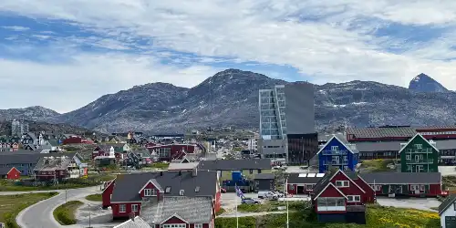

Data
Area: 2,166,086 sq km
Population: 56,583
Capital: Nuuk
Languages: Greenlandic, Danish
Currency: Danish Krone
Time Zone: UTC-3
Calling Code: +299
Internet TLD: .gl
Weather
Temperature: -10 °C
Conditions: Partly Cloudy
Wind: 12 km/h
Wind Chill: